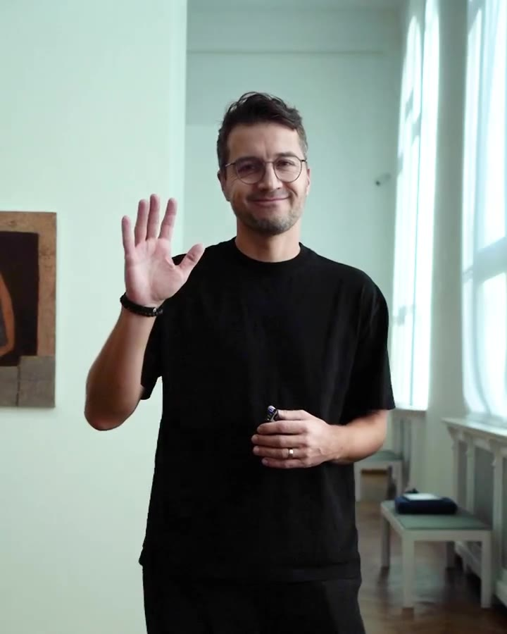
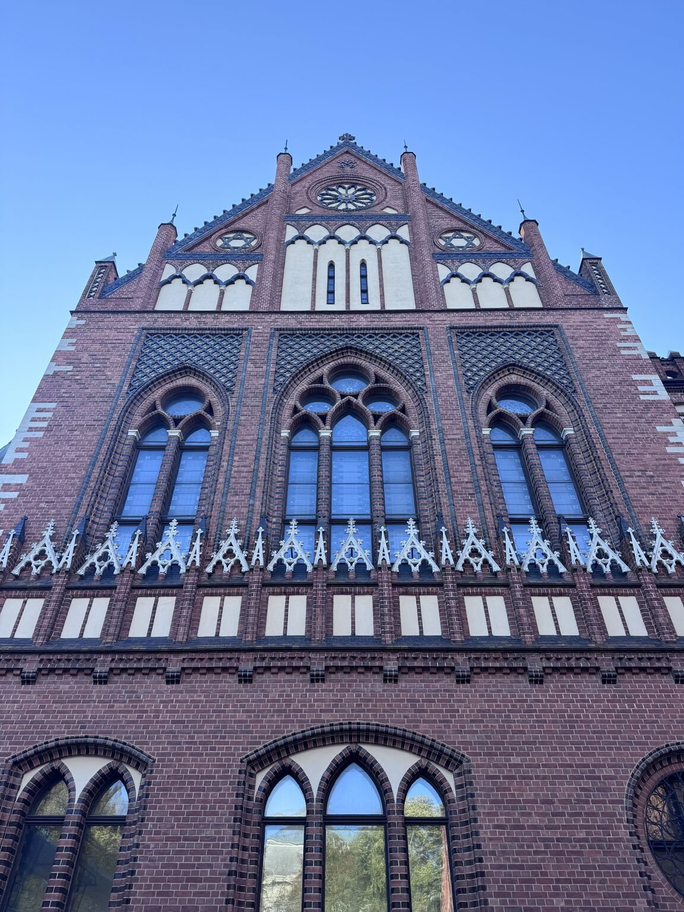
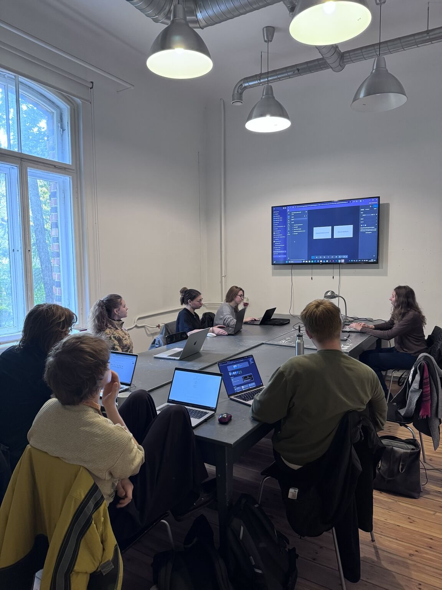
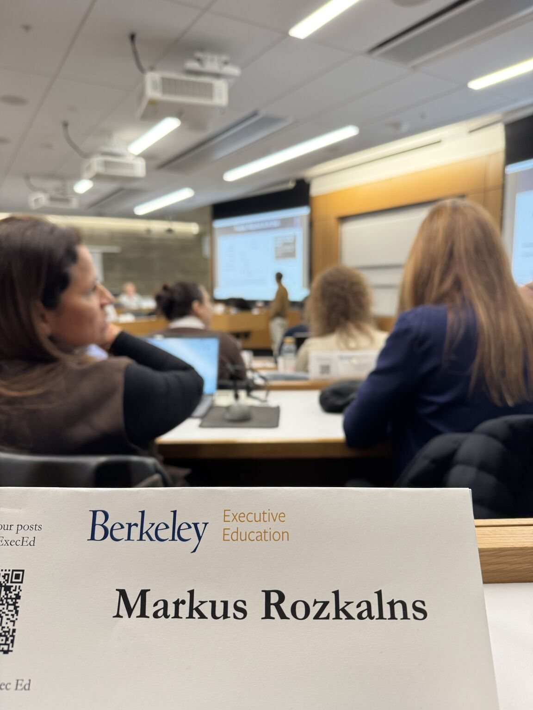
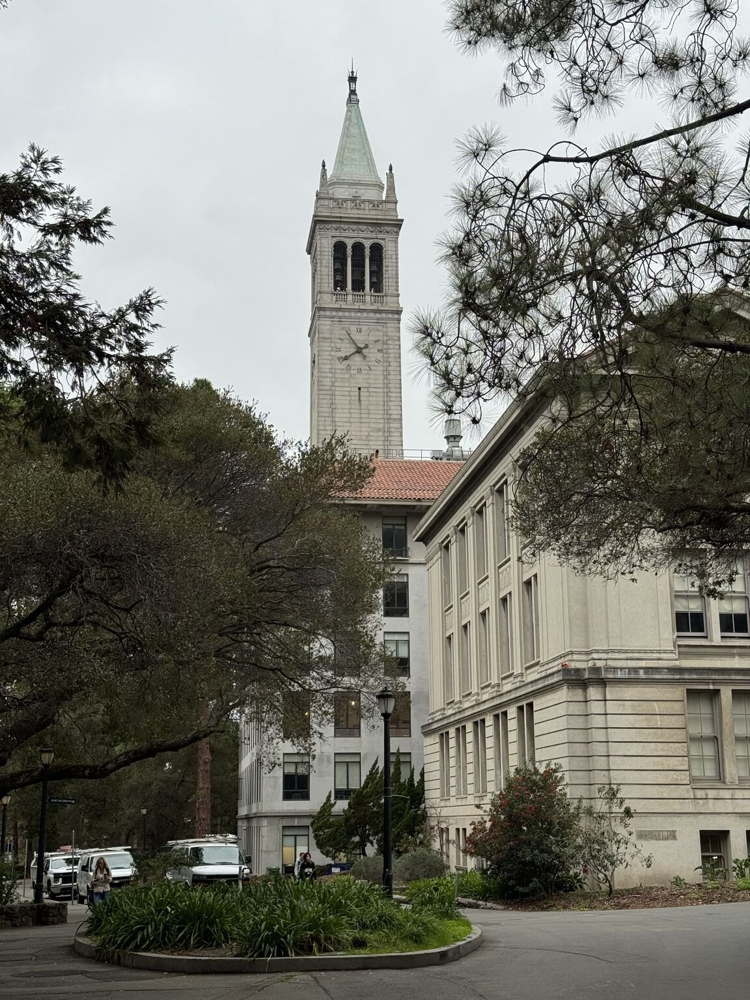
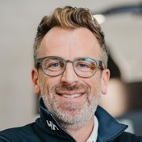

Markus Rozkalns

UX/UI Designer mit Sitz in Riga und enger Verbindung zur Schweiz. Ich gestalte Interfaces für komplexe Systeme, bei denen viel auf dem Spiel steht: von Flugsimulatoren über Banken bis zur Bahn.
Zuletzt habe ich bei Loft Dynamics, dem Schweizer Hersteller EASA- und FAA-qualifizierter VR-Flugsimulatoren, UX/UI verantwortet: die Instructor Operating Station, das Pilotenportal LoftHUB, die Website und die Marke.
Davor habe ich das Designstudio Graftik gegründet und bis zum Verkauf 2025 geführt. In dieser Zeit habe ich für Roche, DNB, Apple, IIHF und Metrohm gestaltet.
Ausserdem unterrichte ich UX/UI und Digital Design an der Lettischen Kunstakademie und betreue Bachelorarbeiten. Ein von mir geleitetes Studierendenprojekt, EMORI, wurde mit einem Red Dot Award ausgezeichnet.
- Standort
- Riga · Zürich
- Sprachen
- Englisch, Deutsch, Lettisch
- Fokus
- Aviatik, Simulation, komplexe Systeme
- Rollen
- UX/UI Designer, Product Designer, Human Factors Specialist
Erfahrung
- 2024–2026Loft DynamicsUX/UI Designer: ab 2024 die Website über Graftik, ab 2025 freiberuflich, etwa eine Woche pro Monat vor Ort: Instructor Operating Station, LoftHUB, Website und MarkeSchweiz
- 2016–heuteLettische KunstakademieDozent für UX/UI und Digital Design; Betreuer von BachelorarbeitenLettland
- 2009–2025GraftikGründer eines Designstudios, 2025 verkauftLettland


Auszeichnungen
- 2025Zertifikat Executive-AI-ProgrammUC Berkeley Haas School of Business · AI for Executives ProgramUSA
- 2024Erasmus+ Quality AwardHuman Rights GuideEU
- 2023Red Dot AwardEMORI, ein von mir geleitetes Studierendenprojekt an der Lettischen KunstakademieDeutschland
- 2020Lettischer Nationaler DesignpreisAsya, ein KI-GesprächscoachLettland


So arbeite ich
Ich gehe zu den Menschen, die das Produkt nutzen, lasse sie vom Ideal träumen und gestalte für das Bedürfnis dahinter. Jede Entscheidung lässt sich auf Evidenz zurückführen. KI beschleunigt meine Arbeit, ersetzt aber nie die Recherche.
- 8–10 WochenUX-AuditAudit-Bericht und Figma-Datei6 Schritte
- 4–6 MonateNeues ProduktFigma, funktionierender Prototyp und Designsystem7 Schritte
- 3–5 MonateRedesignFigma, Prototyp, Designsystem und ein Vorher-nachher-Bericht7 Schritte
«Er verstand es ausgezeichnet, Erkenntnisse aus Interviews und Workshops in konkrete Anforderungen, User Journeys, User Stories, Prioritäten und schliesslich überzeugende UX- und UI-Konzepte zu überführen.»

Fabi Riesen, Gründer und ehemaliger CEO & CTO · Loft Dynamics · SchweizAus dem Referenzschreiben